San Francisco, Córdoba · desde hace más de 40 años
Modelos para fundición en madera y en 3D
Hacemos modelos y cajas de noyo desde cero o a partir de una pieza existente. No hace falta que tenga plano ni modelo: lo ayudamos a dibujar la pieza desde una idea, un croquis o la muestra, y le entregamos el modelo listo para moldear o la pieza terminada. Trabajamos a centésimas.

Servicios
Del plano o la muestra al modelo terminado
Elegimos la técnica que conviene a cada pieza: madera para modelos de larga vida y series largas; impresión 3D para desarrollos, formas complejas y reposiciones rápidas.
-
Modelos en madera
Modelería tradicional para piezas nuevas o de producción continua.
-
Modelos impresos en 3D
Con contracción, portadas y salidas; partidos para imprimir y repetir idénticos.
-
Piezas desde cero
A partir de una idea o un croquis, con prototipo impreso para probar antes de fundir.
-
Reproducción de piezas
Relevamos piezas gastadas o rotas y las redibujamos para volver a fabricarlas.
-
Cajas de noyo
En madera o impresas, con sobremedida en la partición para dejarlas planas.
-
Fundición y mecanizado
Coordinamos colada y mecanizado a centésimas con talleres de confianza: un solo responsable.
Proceso
Así se hace una pieza, paso a paso
El ejemplo es una brida. Usted elige hasta dónde llegamos: solo el dibujo, el modelo listo para moldear, o la pieza fundida y mecanizada.
-
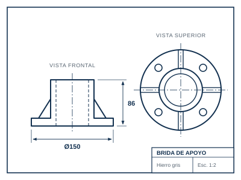
Nos trae la pieza o la idea
Plano, croquis, fotos o la pieza original, aunque esté rota. Si no hay plano ni modelo, lo dibujamos con usted.
-
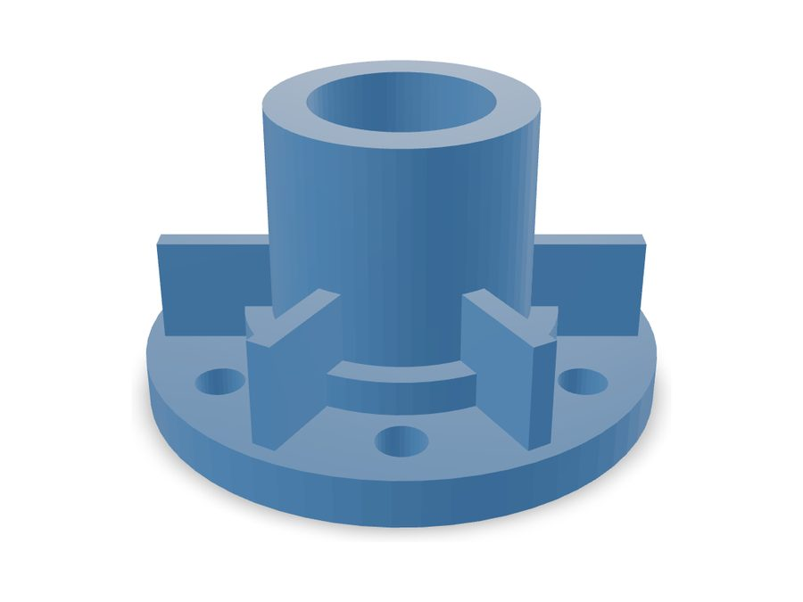
La dibujamos en 3D
En SolidWorks o Inventor. Usted ve y aprueba la pieza, y le pasamos presupuesto y plazo.
-
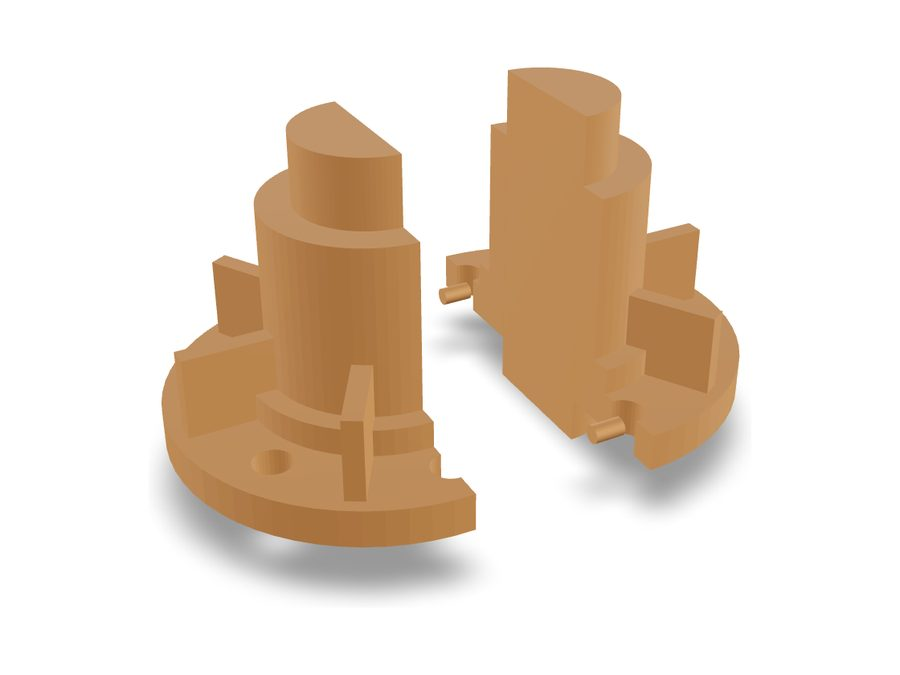
+3,7 %Diseñamos el modelo
Lo partimos por el plano de partición, con portadas, ángulos de salida, espigas y la contracción del metal.
-
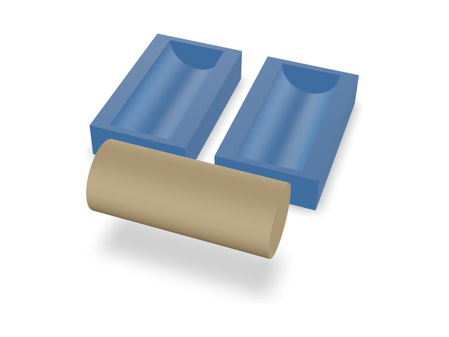
Caja de noyo
Para los huecos interiores: la caja forma el noyo de arena que va dentro del molde.
-
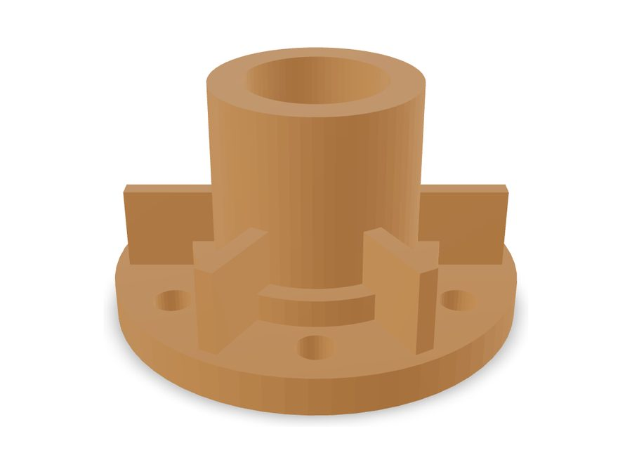
Fabricamos el modelo
En madera o impreso en 3D, según la pieza, la cantidad y el plazo.
-
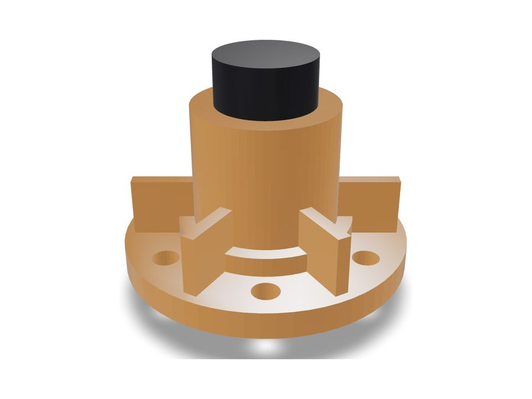
Terminación y control
Lijado, masillado, laca y portadas en negro. Controlamos las medidas a centésimas.
-
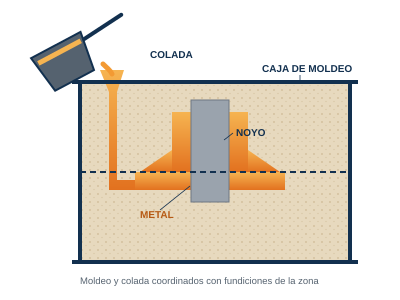
Moldeo y colada
Con el modelo se arma el molde de arena y se vierte el metal. Lo coordinamos con fundiciones de la zona.
-
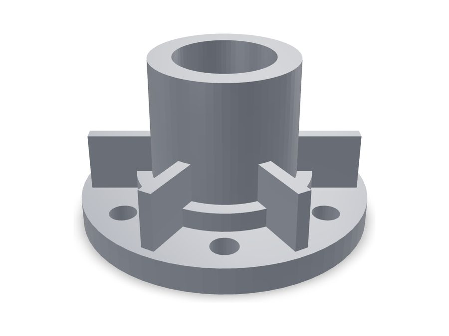
Mecanizado y entrega
La pieza se limpia y se mecaniza a centésimas. La recibe lista para montar.
Trabajos
Ejemplos de piezas por rubro
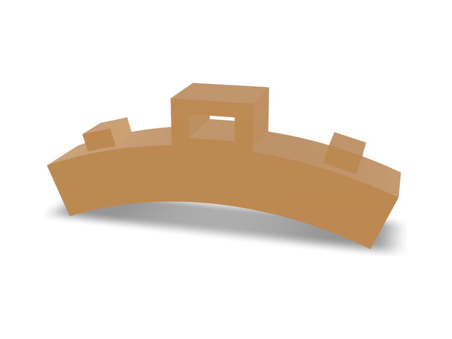
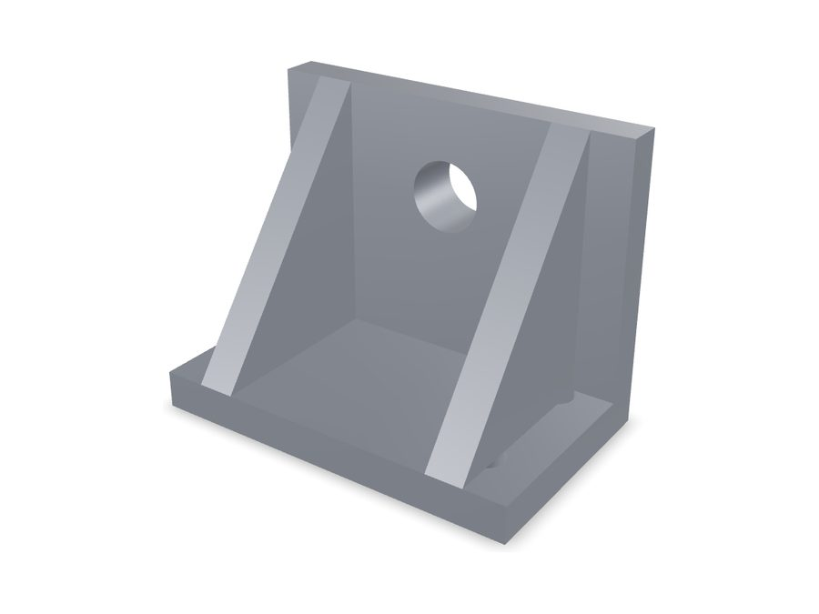
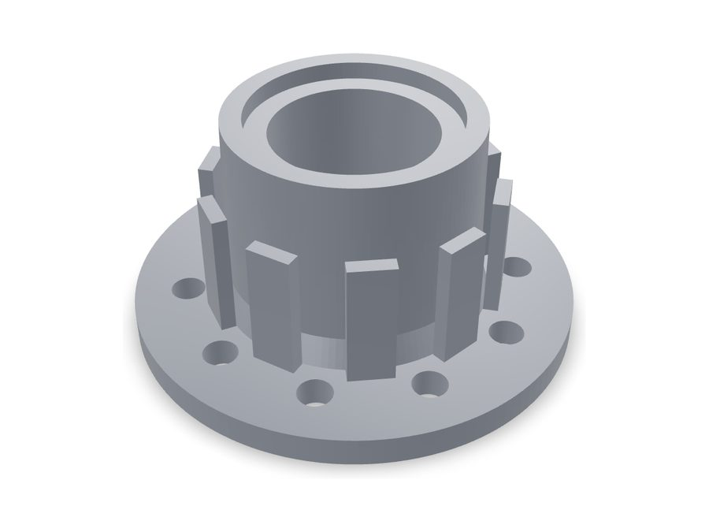
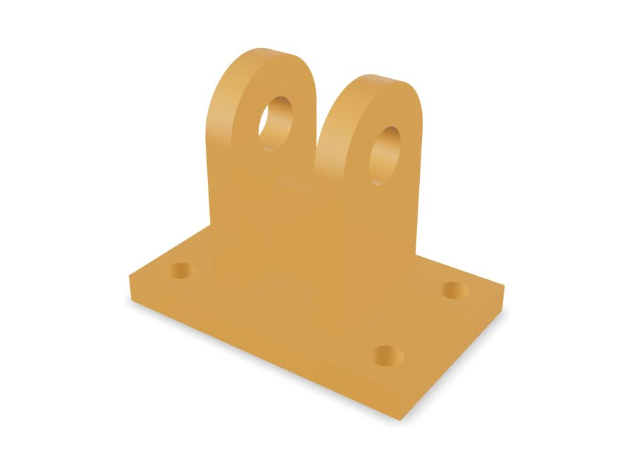
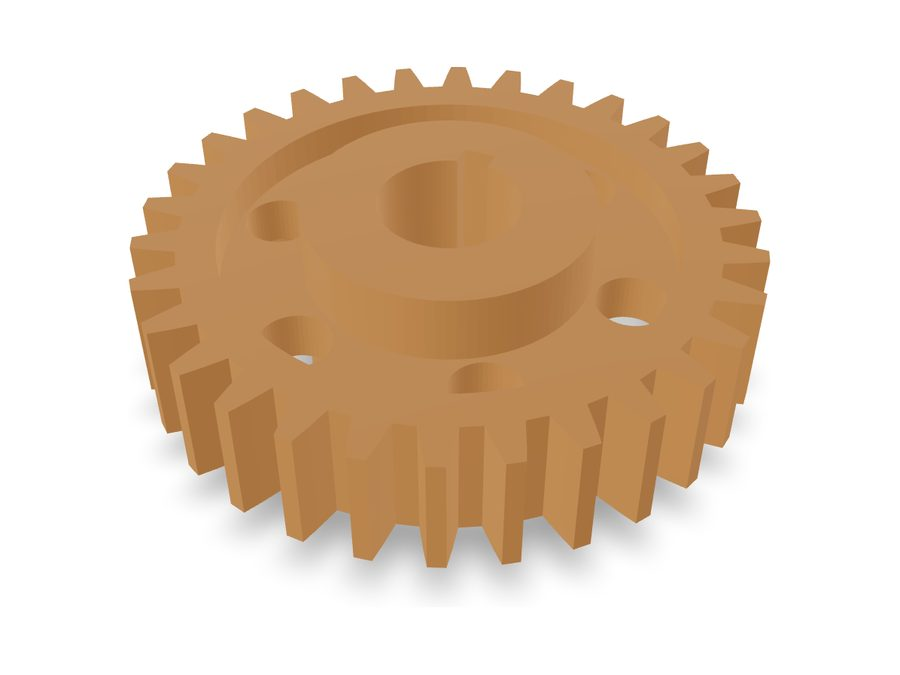
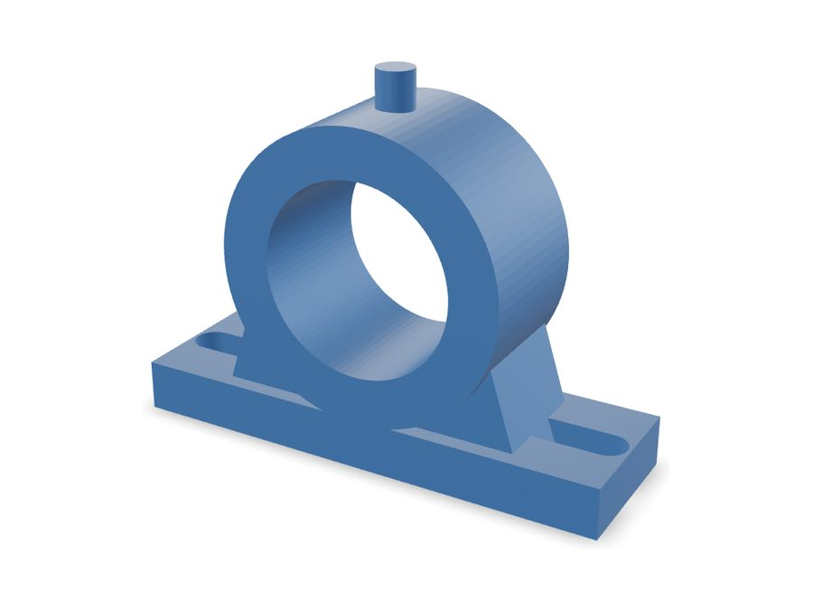
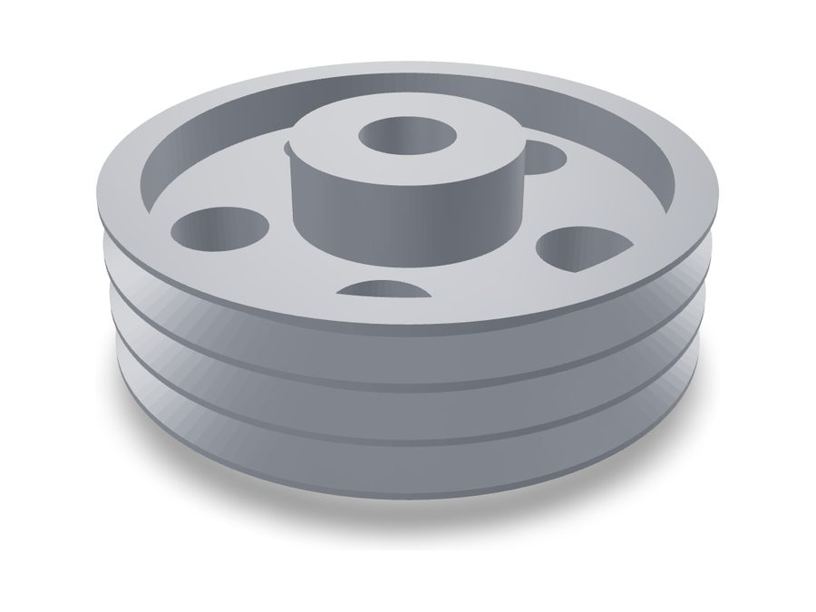
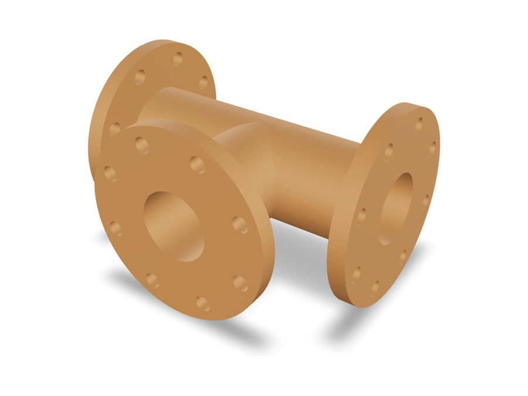
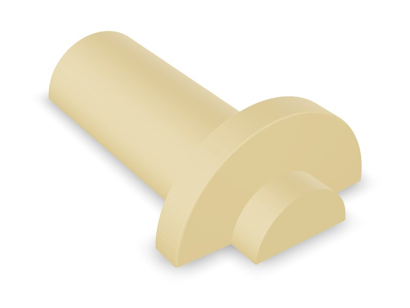
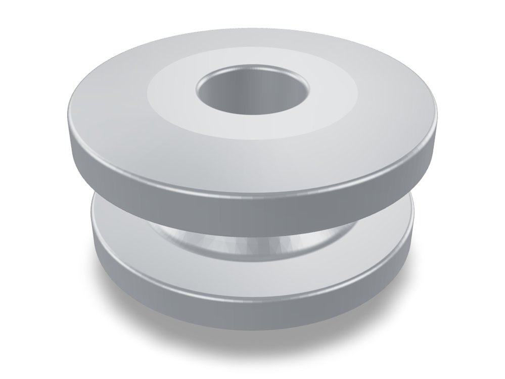

Las piezas que se muestran son muestras simples, a modo de ejemplo de lo que hacemos. Por confidencialidad no publicamos planos ni piezas de clientes.
Contracción del metal
¿Por qué el modelo es más grande que la pieza?
- Diámetro de brida
- 150,0 mm
- Altura total
- 86,0 mm
- Contracción aplicada
- 0 %
Pieza en hierro, terminada. El modelo se dibuja más grande para que, al enfriarse el metal, la pieza llegue a su medida.
Gire la pieza con el mouse.
Contacto
Coordinemos una llamada o una reunión
Déjenos sus datos y lo llamamos para ver su pieza. Si recibió nuestro correo, también puede responderlo directamente.
- Visitamos su empresa o lo recibimos en el taller.
- Presupuesto a partir de plano, croquis, fotos o la muestra.
- Trabajamos a centésimas, del dibujo a la pieza mecanizada.
- Un solo responsable desde el dibujo hasta la pieza terminada.